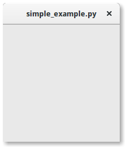
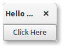

2. Começando¶
2.1. Exemplo Simples¶
Para começar com o nosso tutorial, criamos o programa mais simples possível. Este programa irá criar uma janela vazia de 200 x 200 pixels.
1 2 3 4 5 6 7 8 | import gi
gi.require_version('Gtk', '3.0')
from gi.repository import Gtk
win = Gtk.Window()
win.connect("destroy", Gtk.main_quit)
win.show_all()
Gtk.main()
|
Vamos agora explicar cada linha do exemplo.
import gi
gi.require_version('Gtk', '3.0')
from gi.repository import Gtk
No começo, temos que importar o módulo Gtk para poder acessar as classes e funções do GTK+. Como o sistema de um usuário pode ter várias versões do GTK+ instaladas ao mesmo tempo, queremos ter certeza de que, quando importamos o Gtk, ele se refere ao GTK+ 3 e não a qualquer outra versão da biblioteca, que é o propósito da declaração gi.require_version('Gtk', '3.0').
A próxima linha cria uma janela vazia.
win = Gtk.Window()
Seguido conectando-se ao evento de exclusão da janela para garantir que o aplicativo seja encerrado se clicarmos no x para fechar a janela.
win.connect("destroy", Gtk.main_quit)
Na próxima etapa, exibimos a janela.
win.show_all()
Finalmente, iniciamos o loop de processamento do GTK+, que encerramos quando a janela é fechada (veja a linha 5).
Gtk.main()
Para executar o programa, abra um terminal, mude para o diretório do arquivo e digite:
python simple_example.py
2.2. Exemplo Estendido¶
Para algo um pouco mais útil, aqui está a versão PyGObject do programa clássico “Hello World”.
1 2 3 4 5 6 7 8 9 10 11 12 13 14 15 16 17 18 19 20 | import gi
gi.require_version('Gtk', '3.0')
from gi.repository import Gtk
class MyWindow(Gtk.Window):
def __init__(self):
Gtk.Window.__init__(self, title="Hello World")
self.button = Gtk.Button(label="Click Here")
self.button.connect("clicked", self.on_button_clicked)
self.add(self.button)
def on_button_clicked(self, widget):
print("Hello World")
win = MyWindow()
win.connect("destroy", Gtk.main_quit)
win.show_all()
Gtk.main()
|
Este exemplo difere do exemplo simples, pois subclassificamos Gtk.Window para definir nossa própria classe MyWindow.
class MyWindow(Gtk.Window):
No construtor da classe, temos que chamar o construtor da superclasse. Além disso, dizemos para definir o valor da propriedade title como Hello World.
Gtk.Window.__init__(self, title="Hello World")
As próximas três linhas são usadas para criar um widget de botão, conectar ao seu sinal de ‘clicado’ e adicioná-lo como filho à janela de nível superior.
self.button = Gtk.Button(label="Click Here")
self.button.connect("clicked", self.on_button_clicked)
self.add(self.button)
Assim, o método on_button_clicked() será chamado se você clicar no botão.
def on_button_clicked(self, widget):
print("Hello World")
O último bloco, fora da classe, é muito semelhante ao exemplo acima, mas ao invés de criar uma instância da classe genérica Gtk.Window, criamos uma instância de MyWindow.